Members of Drogheda Vintners are supporting and participating at The Irish Maritime Festival 2014. Wishing them a successful week-end.
The Railway Arms
LOCATED on the Dublin Road, it takes its name from the nearby railway station, with the first train arriving in Drogheda in 1844 and the Boyne Viaduct opening 150 years ago this year in 1855.
The Central Bar
The New Central is located in the centre of Drogheda and has live music most nights of the week and shows most sports on their big screens.
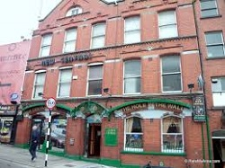
Cagneys Bar
Located in Drogheda city centre, with a privileged view of the river Boyne, Cagney’s bar is the newest and coolest place to be. Cagney's bar was created in 2012, with the simple inspiration of offering a positive environment while tasting and enjoying the drinks available. Cagney's bar was fully constructed and designed to amaze and provide a unique experience.
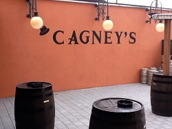
CAGNEYS PRESENTS"TIME FLIES WHEN YOUR HAVING RUM "
PROMOTION ALL WEEKEND : buy Captain Morgan or Kraken spiced rum - get free mixer
FRI 13 : Rum tasting from 5pm-7pm
SAT 14 : Nautical Themed Night,Fishbowl Group Cocktail Specials, DJ Retro Disco
Buy a Pint of Heineken & get entered into our 10 Green Bottles draw - Late Bar Fri & Sat Until 2
SUN 15 : Busker Session in The Gin Garden from 6pm
Gleeson’s Bar 65 Westgate Street, Drogheda
Solid pub. Good staff, good drink, nice crowd, good for sport and bookies next door.
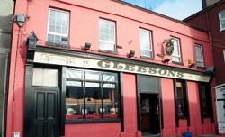
JB's Bar West Street, Drogheda
We provide the perfect place to enjoy a drink among friends.We provide the perfect place to party and drink among friends.
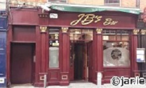
The Market Bar Magdalene Street, Drogheda
The Market Bar is a traditional style bar located in Magdalen Street. It features live music every Saturday, Sunday and Monday. It also caters for sports fans with most major sporting events shown live on television
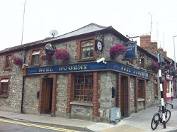
FRI 13 : TRADITIONAL IRISH MUSIC with "IRISH FOLK" & Guest's
SAT 14 : Music by "MIXED UP"
SUN 15: Music by " TWO GUYS"
Mother Hughes 65 North Road Road, Drogheda
A traditional pub with bar, lounge and beer garden located near both Hunky Dory Park, home of Drogheda United and Drogheda Gaelic Grounds, home of the Louth Gaelic football team A popular pub with sports fans it also runs occasional music and also open air music in the beer garden during the Summer.
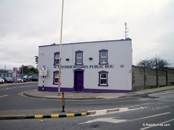
Clarkes Bar Peter Street, Drogheda
Traditional Irish pub which boasts the original bar and interior design, with snugs. Birthplace of Nano Reid, one of Ireland's foremost painters. The pub has a small lounge and a garden. The building itself dates back to 1800, with the front we see now from about 90 years later. The pub was first owned by one Thomas Reid, who was father to the renowned Drogheda artist Nano Reid and also Mollie Reid, so perhaps the current clientele are drawn by her legacy.
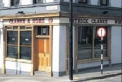
Sarsfield's Pub 128 Chord Road, Drogheda
A traditional pub with bar, lounge and beer garden located near the historic St Laurence Gate, the very popular " Bag Full of Songs" takes place there on the first Monday of every month and there are also occasional music nights. A popular pub with sports fans.
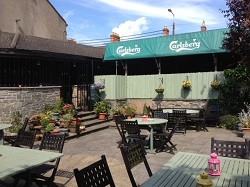
The Living Room
FRI 13 : Thrift shop guitar company aka Tom Anderson
SAT 14 : Spacefrog vs Astrosquirrel & the Super turbo ninja club. Doors open 8pm €5 entry.
SUN 15 : Bad Sneakers play beer garden 5-8pm.
The Thatch Bar
The premises changed hands once again in 2013 and following an extensive development now consists of a bar, a lounge, two large functions rooms, coffee shop and restaurant
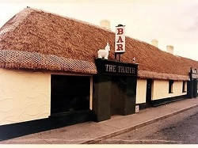
Wm Cairnes & Son Gastropub, Scotch Hall, Drogheda
Opened in June 2012 in the original brewery building of Wm Cairnes & Son Brewery built in 1825. Open 7 Days: 11am – Close. Serving Lunch, Dinner & Drinks. Late Bar Until 2am Every Fri & Sat Night
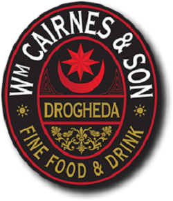
Mc Phails Laurence St Drogheda
Best pub in Drogheda! Life music with standard beer selection. On the back is garden, where customers can smoke or have chat. This place is perfect during hot nights! Cheers!!!
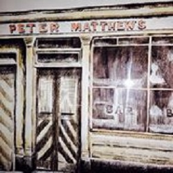
Scholars Hotel and Restaurant
is undoubtedly Drogheda's most outstanding restaurant in terms of food, décor and service, as an all-in dining experience it is second to none. Well known Euro-Toques & World Master Chef George Smith is our Consultant Executive Chef.
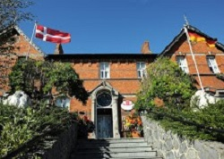
Donaghy’s Bar Trinity street Drogheda
For live music & sports you must pay a visit to Donaghy's, Trinity Street, Drogheda. (Drogheda's newest pub venue)
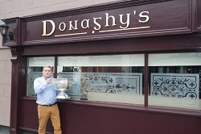
THU 12 :Brazil v Croatia 9pm
FRI 13 : Mexico v Cameroon 5pm, Spain v Holland 8pm, Chile v Australia 11pm
SAT 14 : Colombia v Greece 5pm, Uruguay v Costa Rica 8pm, England v Italy 11pm
SUN 15 : Switzerland v Ecuador 5pm, France v Honduras 8pm
Earth Night Club
A Hotspot amongst locals and visitors, Earth Nightclub at the Westcourt Hotel has established itself as the premier Nightclub in Drogheda. Drogheda, Co Louth.
FRI 13 : Finally Fridays with DJ, Beer Bucket Specials, Cocktail Specials, Heineken Promotion & Late Bar
SAT 14 : Retro Rewind with DJ, Beer Bucket Specials, Cocktail Specials, Heineken Promotion & Late Bar
SUN 15 : Sunday Night Live - Finish the weekend off in style with Dawn & Dave from 7pm, always a great night